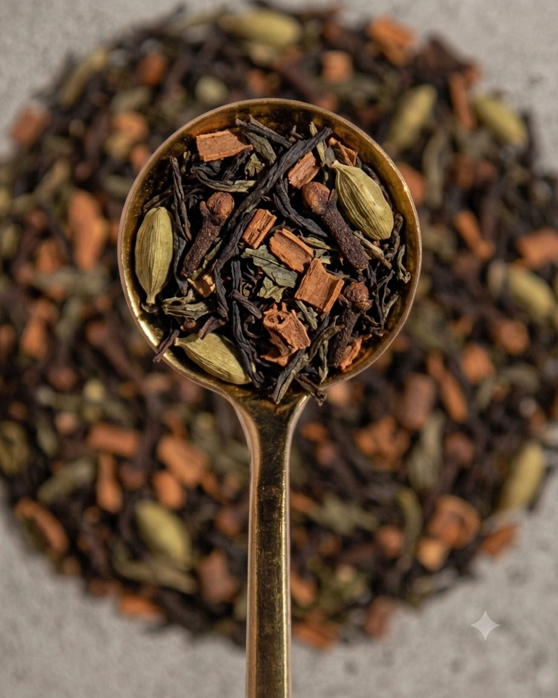
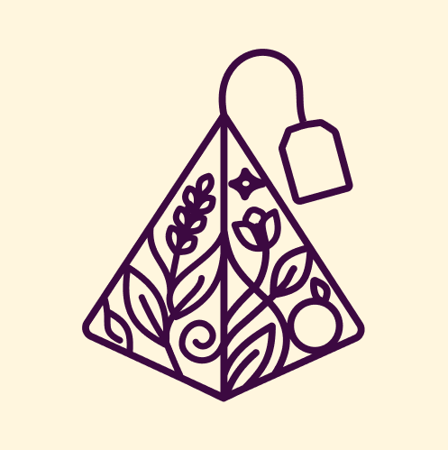
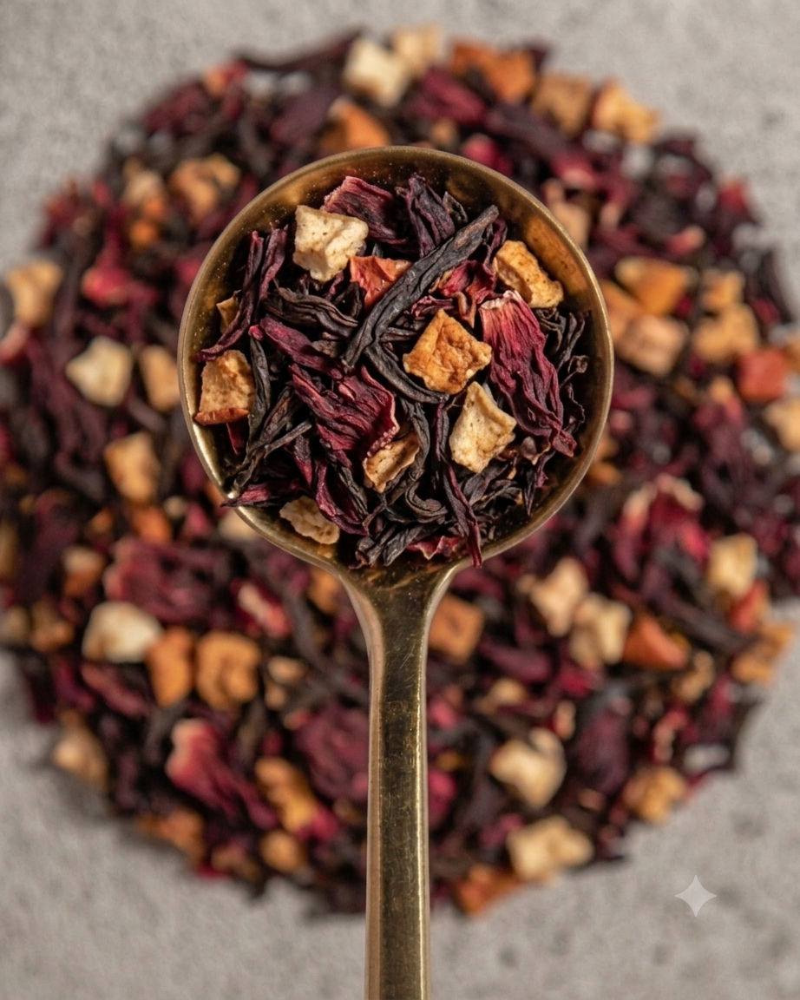
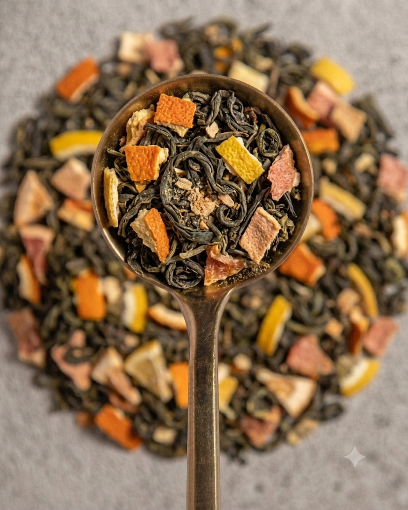

The Spicy Way To Be
Té verde, jengibre, canela, clavo, cardamomo y anís. Cálido, especiado y vibrante.
Consultar →
LE TEA EN VIOLETBlends artesanales de autor
Tés en hebras sueltas, flores, frutas y especias reales. Mezclas creadas con intención para momentos que te pertenecen.
Conocer los blends →Nuestra filosofía
Seleccionamos ingredientes reales y trabajamos en pequeños lotes para preservar el carácter de cada hebra, cada flor y cada fruto. Tés que honran el origen, el tiempo y el ritual.
Blends destacados

Té verde, jengibre, canela, clavo, cardamomo y anís. Cálido, especiado y vibrante.
Consultar →

Té rojo, pétalos de hibiscus y trocitos de manzana. Dulce, fresco y reconfortante.
Consultar →El ritual
Contacto
Escribinos para conocer disponibilidad, presentaciones y combinaciones personalizadas.
Hablar por WhatsApp →